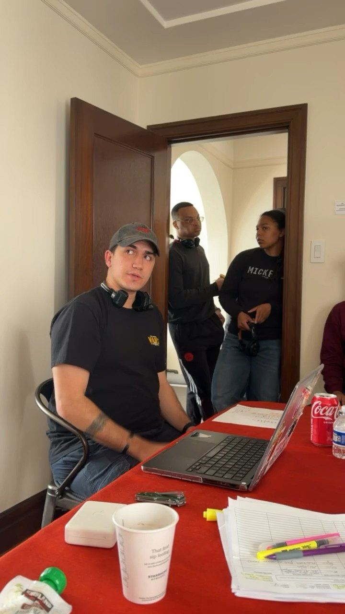

About

I’m a veteran, a son of immigrants, and a filmmaker. Everyone in my family loves movies — my dad showed my brother and me Terminator (1984) when I was eight, and my brother and I were debating which movies were the best before I even knew what a director was. I’ve always loved film form, and when I started making films I realized I liked putting the projects together the most out of all the processes involved. So that’s what I went to school for.
I joined the Army out of high school. I learned teamwork and how to lead, which set me up well for where I wanted to go, so when I got out I signed up for AAU. Since then I produced Not Now, my first project outside the classroom. I want to be the person who finds and makes the stories that should be told.
Where I am
- Degree
- BFA, Motion Pictures & Television (Producing emphasis), Academy of Art University. Expected December 2026.
- Roles
- Producer, writer